Procesador RISC-V superescalar Dual-Issue con predicción dinámica de saltos
Integrantes:
Adriana Lucia Castro Quiñones
Mathias Castro Alva
Juan Pedro Vásquez Vilchez
2026 - 2
1. Introducción
El proyecto consiste en llevar el procesador RISC-V pipelined de cinco etapas a un procesador superescalar Dual-Issue in-order, que en cada ciclo lee dos instrucciones seguidas y, si nada lo impide, las ejecuta a la vez. Después le agregamos predicción dinámica de saltos y comparamos tres arquitecturas: (A) el pipeline Single-Issue, (B) el Dual-Issue y (C) el Dual-Issue con predicción.
La sección 2 presenta el pipeline, las secciones 3 a 6 el Dual-Issue y las secciones 7 y 8 la optimización. En la sección 9 corremos el programa del profesor y uno propio en las tres arquitecturas, y en la sección 10 comparamos su rendimiento.
Cambios respecto a la E1 y la E2. Para esta entrega reorganizamos el código de A y B y rehicimos los programas de prueba. A es el mismo pipeline de la E1, con memorias más grandes (128 instrucciones y 512 palabras de datos, por el programa del profesor). En B, la instrucción pendiente de una emisión parcial ya no se vuelve a leer de la memoria de instrucciones, como hacía la señal Realign de la E2, sino que se desplaza dentro del registro F/D (sección 3.2). Además, en Decode los registros fuente que la instrucción no usa se ponen en x0 (sección 3.3). En programas al azar, A y B dan los mismos resultados y los mismos ciclos que las versiones de la E1 y la E2. Los programas de las secciones 2 y 6 son nuevos y se miden con el criterio de la sección 10.1, así que sus números no coinciden con los de los informes anteriores.
2. Pipeline Single-Issue
2.1 Etapas y datapath
En el pipeline cada instrucción pasa por cinco etapas, una por ciclo, y en cada ciclo entra una nueva. Entre etapa y etapa hay un registro de pipeline, y las señales terminan en F, D, E, M o W según la etapa en la que están (Figura 1).
Fetch: se lee la instrucción de PCF y se calcula PCPlus4F.
Decode: la Control Unit genera el control, el Register File lee rs1 y rs2, y Extend arma el inmediato.
Execute: la ALU opera y se resuelven los saltos (PCTargetE y PCSrcE).
Memory: lw lee y sw escribe la memoria de datos.
Writeback: el resultado se escribe en el Register File.
El procesador soporta add, sub, and, or, slt, addi, andi, ori, slti, lw, sw, beq y jal. El Register File escribe en el flanco de bajada, así que lo que escribe Writeback ya se puede leer en Decode en el mismo ciclo. La Tabla 1 indica qué módulos del single-cycle cambiaron.
Módulo
Estado
Cambio
datapath
Modificado
Registros de pipeline, muxes de forwarding y lógica de PCSrcE
controller
Modificado
Ya no calcula PCSrc: entrega Branch y Jump, que viajan hasta Execute
maindec
Modificado
Caso de la burbuja (sección 2.2)
regfile
Modificado
Escribe en el flanco de bajada y empieza con todos los registros en 0
imem, dmem
Modificado
128 instrucciones y 512 palabras de datos
hazardunit
Nuevo
Forwarding, stalls y flushes
flopenrc
Nuevo
Registro con enable (para el stall) y clear (para el flush)
riscv, top
Modificado
Conectan la Control Unit, el datapath y las memorias
Los demás
Sin cambios
aludec, alu, extend, adder, mux2, mux3, flopr
Tabla 1. Módulos del pipeline Single-Issue.
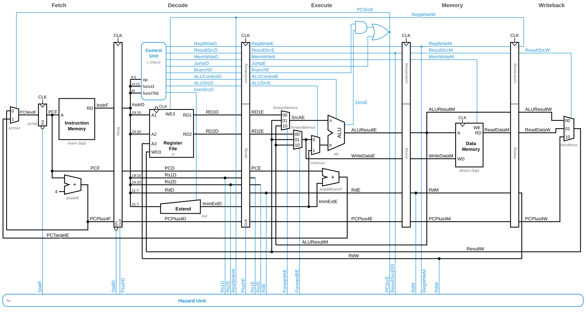
Figura 1. Datapath del pipeline Single-Issue con la Control Unit y la Hazard Unit. Las señales de control están en azul.
2.2 Unidad de control
La Control Unit es la del single-cycle, pero ya no calcula PCSrc. Sus señales se generan en Decode y viajan con la instrucción por los registros de pipeline hasta la etapa que las usa (Tabla 2). ImmSrc se usa en Decode; ALUControl, ALUSrc, Branch y Jump en Execute; MemWrite en Memory, y RegWrite y ResultSrc en Writeback.
Instrucción
Opcode
RegWrite
ImmSrc
ALUSrc
MemWrite
ResultSrc
Branch
ALUOp
Jump
lw
0000011
1
00
1
0
01
0
00
0
sw
0100011
0
01
1
1
00
0
00
0
Tipo R
0110011
1
xx
0
0
00
0
10
0
beq
1100011
0
10
0
0
00
1
01
0
Tipo I (ALU)
0010011
1
00
1
0
00
0
10
0
jal
1101111
1
11
0
0
10
0
00
1
Burbuja
0000000
0
00
0
0
00
0
00
0
Tabla 2. Señales del Main Decoder (maindec.v).
La única fila nueva es la de la burbuja. Un flush deja 00000000 en Decode, y con ese opcode todas las señales valen 0, así que la burbuja no escribe nada.
2.3 Hazard Unit
Con varias instrucciones a la vez aparecen data hazards, cuando una instrucción necesita un resultado que todavía no se escribió, y control hazards, cuando entran instrucciones detrás de un salto que se toma. La Hazard Unit los resuelve de tres formas.
Forwarding. Si la instrucción en Execute lee un registro que escribe la que está en Memory o en Writeback, el dato se toma de ahí (Figura 2). Con ForwardAE = 10 el mux elige ALUResultM, con 01 ResultW y con 00 el Register File. Si el registro está en las dos etapas gana Memory, que tiene el valor más reciente.
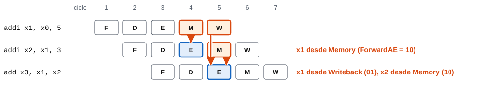
Figura 2. Forwarding: las flechas van de la etapa que tiene el dato a la ALU.
Código 1. Forwarding del operando A en hazardunit.v. El del operando B es igual con Rs2E.
Stalling. Un lw tiene su dato recién al final de Memory, un ciclo tarde para la instrucción siguiente (Figura 3). Si el lw está en Execute y la instrucción en Decode usa su destino, lwStall detiene el PC y el registro F/D un ciclo y mete una burbuja en Execute. Después el dato llega por forwarding desde Writeback.
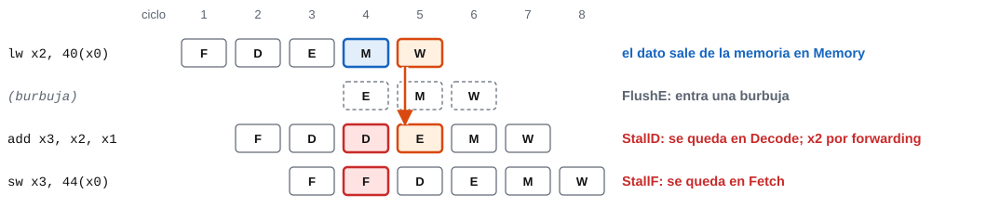
Figura 3. Stall por un lw: el add espera un ciclo en Decode.
Flushing. Los saltos se resuelven en Execute, y mientras tanto Fetch sigue leyendo las instrucciones de abajo. Si el salto se toma, FlushD y FlushE anulan las dos que entraron y el PC carga PCTargetE (Figura 4). Cada salto tomado cuesta 2 ciclos.
Código 2. Stalls y flushes en hazardunit.v. ResultSrcE0 es el bit 0 de ResultSrcE, que vale 1 solo en un lw.
2.4 Programas de prueba
Probamos el pipeline con cuatro programas, uno por caso (Tabla 3). Están en la carpeta programas (.s y .mem) y sus testbenches en single_issue/tb. Todos terminan en fin: beq x0, x0, fin. Cuando fin llega a Writeback, el testbench compara Mem[100] con el valor esperado, y los cuatro pasan.
Programa
Qué prueba
Mem[100]
e1_p1_isa
Las trece instrucciones, sin dependencias cercanas
17
e1_p2_forwarding
Forwarding desde Memory y desde Writeback
4
e1_p3_stalling
Dos dependencias con un lw
42
e1_p4_flushing
Un beq tomado, uno no tomado y un jal
7
Tabla 3. Programas de prueba del pipeline.
Las waveforms del informe son recortes de Vivado. Arriba de cada una está la instrucción que hay en cada etapa, y (—) es una burbuja. En el Dual-Issue cada etapa tiene una línea por vía, con la vía 0 arriba. Cada marcador numerado es un ciclo que se explica debajo con el mismo número. Una X (en rojo) es un valor que no se usa en ese ciclo, como una posición de memoria que todavía no se escribió.
Entre cada escritura y la lectura de ese registro hay al menos dos instrucciones, así que no hace falta forwarding ni stall. La Figura 5 muestra el final del programa.
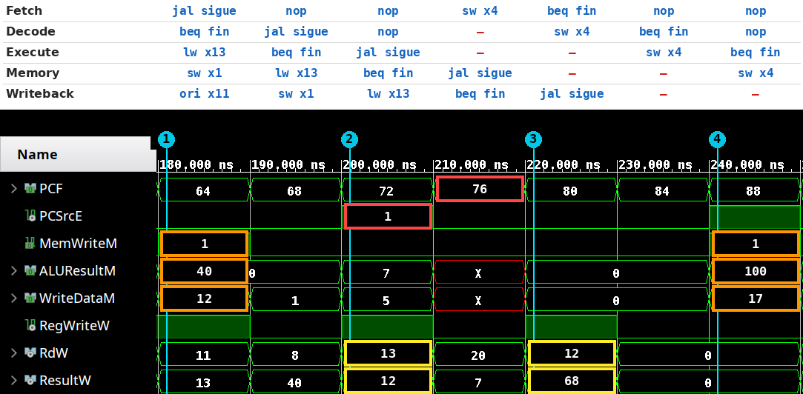
Figura 5. Programa 1, de 180 a 250 ns.
sw x1 está en Memory y guarda 12 en la dirección 40.
lw x13 escribe 12 en Writeback. A la vez el jal está en Execute con PCSrcE = 1, así que los dos nop de detrás se anulan.
El jal escribe su dirección de retorno en x12.
El último sw guarda 17 en la dirección 100.
2.4.2 Programa 2: forwarding
0 addi x1, x0, 5 # x1 = 5
4 addi x2, x1, 3 # x2 = 8 x1 desde Memory
8 add x3, x1, x2 # x3 = 13 x1 desde Writeback, x2 desde Memory
12 sub x4, x3, x1 # x4 = 8 x3 desde Memory
16 addi x5, x0, 1 # x5 = 1
20 addi x5, x5, 1 # x5 = 2
24 add x6, x5, x5 # x6 = 4 x5 en Memory (2) y en Writeback (1)
28 sw x6, 100(x0) # Mem[100] = 4, el dato viene de Memory
32 fin: beq x0, x0, fin
Código 4. Programa 2 (e1_p2_forwarding.s).
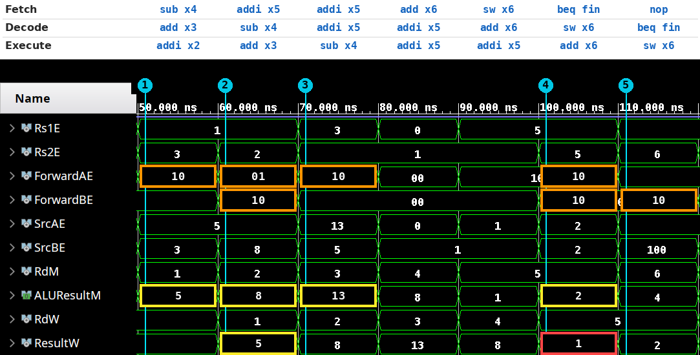
Figura 6. Programa 2, de 50 a 120 ns.
addi x2 necesita x1, que está en Memory: ForwardAE = 10.
add x3 toma x1 de Writeback (01) y x2 de Memory (10).
sub x4 toma x3 de Memory. x1 ya se lee del Register File.
add x6, x5, x5: x5 está en Memory y en Writeback, y gana Memory porque tiene el valor más nuevo.
El sw recibe por forwarding el dato que guarda (ForwardBE = 10). Ese dato va por WriteDataE; SrcBE = 100 es el inmediato de la dirección.
2.4.3 Programa 3: stalling
0 addi x1, x0, 21 # x1 = 21
4 sw x1, 40(x0) # Mem[40] = 21
8 lw x2, 40(x0) # x2 = 21
12 add x3, x2, x1 # x3 = 42 usa x2 justo después del lw: stall
16 sw x3, 44(x0) # Mem[44] = 42
20 lw x4, 44(x0) # x4 = 42
24 sw x4, 100(x0) # Mem[100] = 42 el dato viene del lw: stall
28 fin: beq x0, x0, fin
Código 5. Programa 3 (e1_p3_stalling.s).
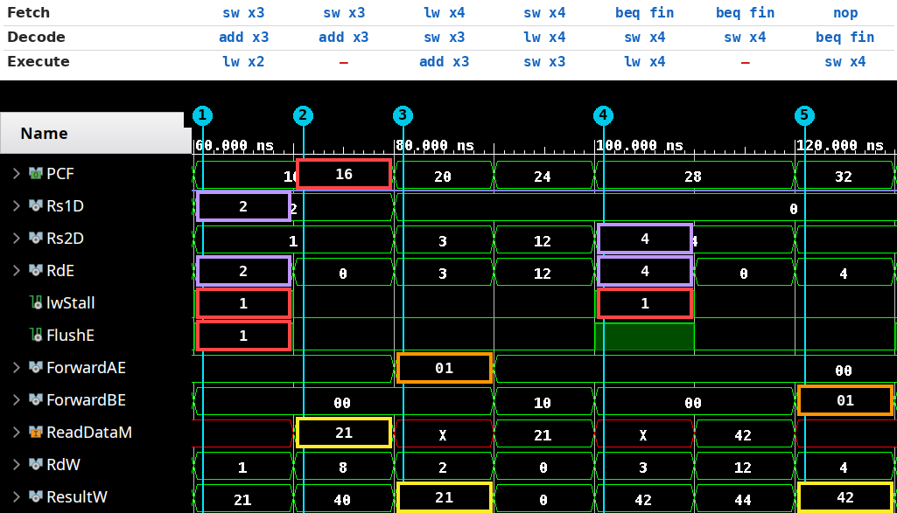
Figura 7. Programa 3, de 60 a 130 ns.
lw x2 está en Execute y el add que lo usa, en Decode: lwStall = 1.
PCF se queda en 16, el add espera en Decode y entra una burbuja a Execute.
El add llega a Execute y recibe el 21 desde Writeback (ForwardAE = 01).
Pasa lo mismo con lw x4 y el sw que lo usa, esta vez por rs2.
El sw recibe el 42 desde Writeback.
2.4.4 Programa 4: flushing
Detrás de cada salto tomado hay dos addi x9, x9, 1 que no deben ejecutarse. Si alguna lo hiciera, el resultado no sería 7.
beq x1, x1, L1 se toma (PCSrcE = 1) y FlushD y FlushE anulan los dos addi x9.
PCF salta a 20 y quedan burbujas en Decode y Execute.
beq x1, x0, L2 no se toma y no se anula nada.
El jal salta a 40 y otra vez se anulan dos instrucciones.
El jal escribe x3 = 32. Al final Mem[100] = 7, así que nada anulado se ejecutó.
3. Arquitectura del procesador Dual-Issue
3.1 Idea general
El Dual-Issue mantiene las cinco etapas del pipeline, pero por cada una pueden pasar dos instrucciones. Llamamos par a las dos instrucciones seguidas que están en Decode. La primera, que es la más antigua, va por la vía 0 y la segunda por la vía 1. Por eso en el código las señales terminan en 0 o en 1, como InstrD0 e InstrD1.
Cuando una instrucción pasa de Decode a Execute decimos que se emite. La emisión es en orden: en cada ciclo salen las dos, solo la primera o ninguna, según decida la Issue Unit (sección 4). Si sale solo la primera es una emisión parcial, y a la otra instrucción del par la llamamos su pareja.
La Tabla 4 resume qué recursos se duplican y cuáles se comparten, y la Figura 9 muestra el datapath completo.
Recurso
Cantidad
Comentario
Memoria de instrucciones
1
Una dirección (PCF) y dos lecturas: InstrF0 e InstrF1
Control Unit y Extend
2
Uno por vía, los mismos módulos del pipeline
Register File
1
Cuatro lecturas y dos escrituras
ALU
2
Una por vía
Muxes de forwarding
4
Dos por vía (operandos A y B), de cinco entradas
Recurso de branches
1
Compartido: un sumador de PCTarget y una lógica de PCSrc
Memoria de datos
1 puerto
Compartido: un solo lw o sw por ciclo
Tabla 4. Recursos del procesador Dual-Issue.
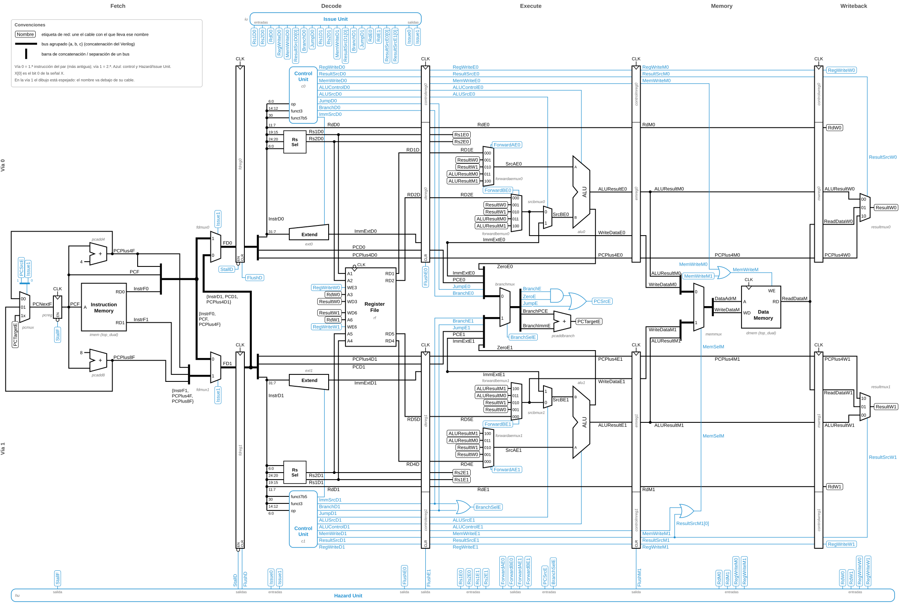
Figura 9. Datapath completo del procesador Dual-Issue. En azul están las señales de control y las de las unidades Issue y Hazard. Una etiqueta con borde está conectada al cable que tiene ese nombre.
3.2 Fetch y registro F/D
La memoria de instrucciones entrega la instrucción de PCF (InstrF0) y la siguiente (InstrF1). El PC ya no avanza siempre 4, sino según cuántas instrucciones salieron de Decode (Figura 10):
Si salen las dos, entra el par nuevo y el PC avanza 8.
Si sale solo la primera, la segunda pasa a la primera posición del registro F/D y a su lado entra InstrF0. El PC avanza 4. Así la instrucción pendiente se reagrupa con la que le sigue en el programa.
Si no sale ninguna, el PC y el registro F/D no cambian.
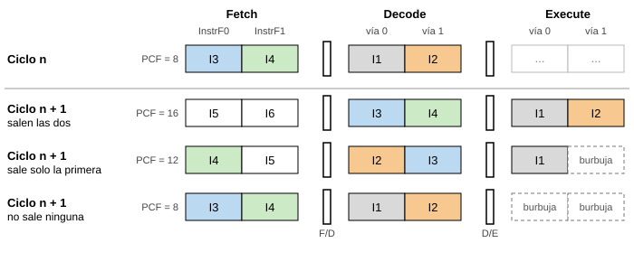
Figura 10. Qué hay en cada etapa en el ciclo siguiente, según cuántas instrucciones salieron de Decode. I1 a I6 son instrucciones seguidas, con I1 en la dirección 0.
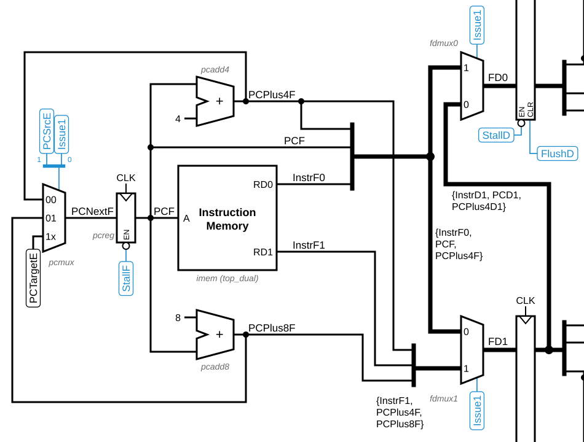
Figura 11. Detalle de Fetch en la Figura 9: el mux del PC (pcmux) y los dos muxes del registro F/D (fdmux0 y fdmux1).
Para esto hay un mux delante de cada posición del registro F/D, controlados por Issue1, y el mux del PC tiene tres entradas (Figura 11). Con {PCSrcE, Issue1} = 00 elige PCPlus4F, con 01 PCPlus8F y con un salto tomado (1x) PCTargetE.
Código 7. Siguiente PC y registro F/D en datapath_dual.v.
Cada posición del registro F/D guarda lo mismo que el registro F/D del pipeline, así que de Decode en adelante cada vía funciona como el pipeline de la sección 2.
3.3 Decode
Cada vía tiene su propia Control Unit y su propio Extend, que son los módulos del pipeline instanciados dos veces. El Register File tiene cuatro lecturas y dos escrituras. Si las dos vías escriben el mismo registro en el mismo ciclo, queda el dato de la vía 1, que es la instrucción más joven.
always @(negedge clk) begin
if (we3 & ~(we6 & (a6 == a3))) rf[a3] <= wd3;
if (we6) rf[a6] <= wd6;
end
Código 8. Las dos escrituras del Register File en regfile_dual.v.
La Figura 12 muestra el Dual Fetch y el Dual Decode con el programa 1 de la sección 6.
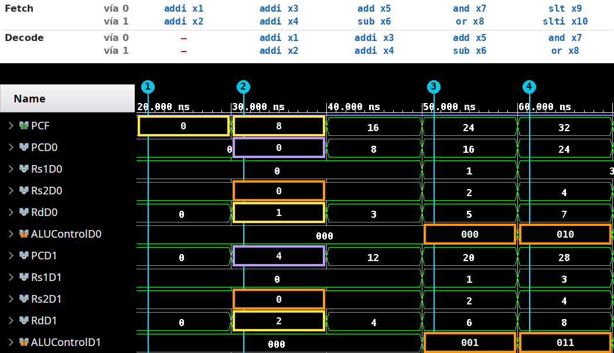
Figura 12. Dual Fetch y Dual Decode, de 20 a 70 ns.
Con PCF = 0 la memoria entrega addi x1 y addi x2.
Las dos están en Decode con PCD0 = 0 y PCD1 = 4. Rs2D0 y Rs2D1 valen 0 porque addi no lee rs2.
Las dos Control Unit decodifican add x5 y sub x6 en el mismo ciclo y dan dos ALUControl distintos.
Lo mismo pasa con and x7 y or x8.
También cambia cómo se sacan los registros fuente. En addi o lw los bits 24:20 son parte del inmediato y no rs2, y en jal los bits 19:15 no son rs1. Si se comparan igual aparecen dependencias falsas y salen menos pares. Por eso, si la instrucción no lee el registro, usamos x0, que nunca genera una dependencia.
Código 9. Registros fuente de la vía 0 en datapath_dual.v. La vía 1 es igual.
3.4 Execute
Cada vía tiene su ALU y sus muxes de forwarding (sección 5.1), así que dos operaciones ALU se ejecutan en el mismo ciclo. Para los saltos hay un solo recurso, un sumador de PCTargetE y una lógica de PCSrcE, porque la Issue Unit no deja salir dos saltos juntos. BranchSelE indica en qué vía está el salto, y con esa señal branchmux le pasa al recurso los datos de esa vía (Figura 13).
Código 10. Recurso único de resolución de branches en datapath_dual.v.
3.5 Memory y Writeback
La memoria de datos tiene un solo puerto, y la Issue Unit tampoco deja salir dos accesos a memoria juntos. MemSelM indica si el acceso está en la vía 1, y con esa señal memmux elige la dirección y el dato. En Writeback cada vía escribe su resultado por su propio puerto del Register File.
Código 11. Asignación del puerto único de memoria de datos en datapath_dual.v.
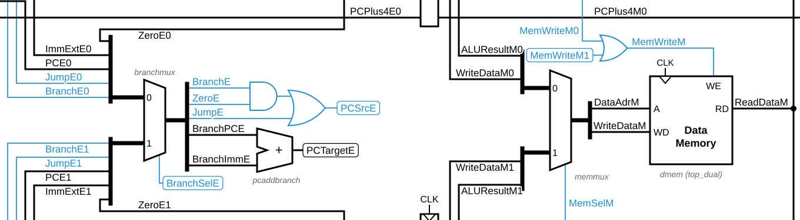
Figura 13. Recursos compartidos en la Figura 9: el recurso de branches (branchmux) y el puerto de memoria de datos (memmux).
3.6 Módulos
La Tabla 5 resume qué módulos cambiaron respecto al pipeline.
Módulo
Estado
Función
top_dual
Modificado
Une el procesador con la memoria de instrucciones y la de datos
riscvdual
Modificado
Las dos Control Unit y el datapath
datapath_dual
Modificado
Datapath de dos vías con los recursos compartidos
imem_dual
Modificado
Memoria de instrucciones con dos lecturas
regfile_dual
Modificado
Register File de cuatro lecturas y dos escrituras
issueunit
Nuevo
Decide si salen dos instrucciones, una o ninguna
hazardunit_dual
Modificado
Forwarding entre vías, stalls y flushes
mux5
Nuevo
Mux de forwarding de cinco entradas
Los demás
Sin cambios
controller, maindec, aludec (una Control Unit por vía), alu, extend, adder, mux2, mux3, flopr, flopenrc, dmem
Tabla 5. Módulos del procesador Dual-Issue.
4. Issue Unit
La Issue Unit está en Decode y calcula Issue0 (sale la primera instrucción) e Issue1 (sale también la segunda). La Tabla 6 resume qué revisa.
4.1 Condiciones de emisión
Situación
Señal
Qué sale
La primera usa el resultado de un lw que está en Execute
lwStall0
Ninguna
La segunda usa el resultado de un lw que está en Execute
lwStall1
Solo la primera
La segunda lee el registro que escribe la primera
RAW
Solo la primera
Las dos son lw o sw
MemConflict
Solo la primera
Las dos son beq o jal
BranchConflict
Solo la primera
Ninguna de las anteriores
Las dos
Tabla 6. Condiciones que revisa la Issue Unit.
RAW dentro del par. Si la segunda instrucción lee el registro que escribe la primera, ese dato todavía no existe cuando las dos están en Execute, así que no hay de dónde hacer forwarding. Sale solo la primera, y en el ciclo siguiente la segunda recibe el dato desde Memory (Figura 14).
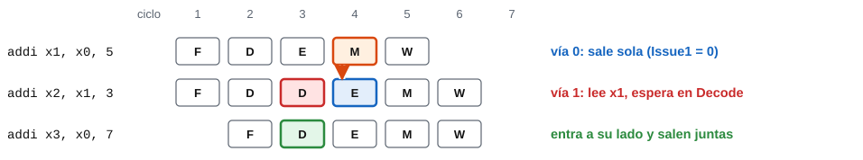
Figura 14. RAW dentro del par: la segunda espera en Decode y se reagrupa con la siguiente.
Las dependencias WAR y WAW no impiden que el par salga junto. En una WAW queda el dato de la vía 1, tanto en el Register File como en el forwarding.
Load-Use. Es el lwStall del pipeline, pero ahora el lw puede estar en cualquiera de las dos vías de Execute. Si depende la primera instrucción no sale ninguna, porque la emisión es en orden. Si solo depende la segunda, sale la primera.
Recursos compartidos. Si las dos instrucciones usan memoria o las dos son saltos, sale solo la primera.
Código 12. Lógica de issueunit.v. LoadD y LoadE son el bit 0 de ResultSrc, que vale 1 solo en un lw.
4.2 Asignación de recursos
En un par hay como máximo un acceso a memoria y un salto, así que el recurso compartido va a la vía que lo pide y no hay que decidir quién gana. Por eso un lw, un sw o un salto puede salir junto con una operación ALU en cualquier posición del par.
4.3 Reagrupamiento
Cuando sale solo la primera, la segunda pasa a la vía 0 y se agrupa con la siguiente del programa (sección 3.2). La pendiente siempre queda delante de la que entra desde Fetch y el PC avanza solo por las instrucciones que entraron, así que ninguna se pierde ni se repite. El programa 6 de la sección 6 lo prueba.
5. Hazard Unit
Respecto al pipeline, la Hazard Unit cambia en cuatro cosas: el forwarding tiene cuatro fuentes, el lwStall pasó a la Issue Unit, un salto tomado manda sobre un stall y hay flushes por vía.
5.1 Forwarding entre vías y etapas
El dato que necesita una instrucción en Execute puede estar en Memory o en Writeback de cualquiera de las dos vías. Por eso los cuatro muxes de forwarding son de cinco entradas (Tabla 7). Si el registro está en varios lugares se toma el valor más reciente: Memory antes que Writeback y, dentro de la misma etapa, la vía 1 antes que la vía 0.
Forward
Dato elegido
De dónde viene
000
RD del Register File
No hay dependencia
001
ResultW0
Writeback, vía 0
010
ResultW1
Writeback, vía 1
011
ALUResultM0
Memory, vía 0
100
ALUResultM1
Memory, vía 1
Tabla 7. Codificación de ForwardAE0, ForwardBE0, ForwardAE1 y ForwardBE1.
Código 13. Forwarding del operando A de la vía 0 en hazardunit_dual.v. Los otros tres son iguales cambiando el registro fuente (Rs2E0, Rs1E1 y Rs2E1).
Entre las dos instrucciones que están juntas en Execute no hay forwarding, porque la Issue Unit no deja salir juntas dos instrucciones con RAW. Hacerlo pondría las dos ALU una detrás de otra en el mismo ciclo y alargaría el camino crítico.
5.2 Stalls
Si no sale ninguna instrucción (Issue0 = 0), StallF y StallD detienen el PC y el registro F/D, y entra una burbuja en las dos vías de Execute. Si sale solo la primera, nada se detiene y solo entra una burbuja en la vía 1.
Un caso nuevo es tener un Load-Use en Decode y un salto tomado en Execute en el mismo ciclo, por ejemplo con un lw y un beq juntos en Execute. Manda el salto, porque lo que está en Decode se va a anular. Por eso StallF y StallD llevan ~PCSrcE.
5.3 Branches y flushing
Como en el pipeline, el salto se resuelve en Execute, y si se toma se anulan las instrucciones más jóvenes:
FlushD anula el par que viene de Fetch.
FlushE0 y FlushE1 anulan el par que está en Decode.
Si el salto está en la vía 0, su pareja de la vía 1 también es más joven. FlushM1 la anula en el registro E/M, antes de que escriba algo. Antes no se puede, porque en Decode todavía no se sabe si el salto se toma.
Si el salto está en la vía 1, la instrucción de la vía 0 es más antigua y sigue.
La penalidad sigue siendo de 2 ciclos, pero ahora se pierden hasta cuatro instrucciones además de la pareja (Figura 15). La Tabla 8 junta las señales de stall y flush.
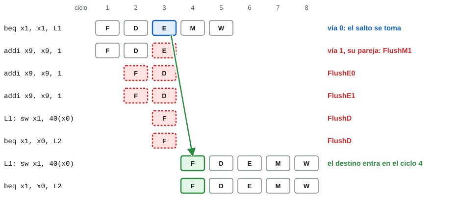
Figura 15. Salto tomado en la vía 0 (programa 4 de la sección 6).
Señal
Ecuación
En el pipeline
Efecto
StallF, StallD
~Issue0 & ~PCSrcE
lwStall
Se mantienen el PC y el par que está en Decode
FlushD
PCSrcE
PCSrcE
Anula el par que venía de Fetch
FlushE0
~Issue0 | PCSrcE
lwStall | PCSrcE
Burbuja en Execute, vía 0
FlushE1
~Issue1 | PCSrcE
no existe
Burbuja en Execute, vía 1
FlushM1
PCSrcE & ~BranchSelE
no existe
Anula la instrucción de la vía 1 cuando el salto tomado está en la vía 0
Tabla 8. Señales de stall y flush de hazardunit_dual.v.
6. Programas de prueba del Dual-Issue
Probamos el Dual-Issue con seis programas, uno por cada caso que pide el enunciado (Tabla 9). Funcionan igual que los del pipeline y sus testbenches están en dual_issue/tb. En los listados una línea en blanco separa los grupos que salen juntos de Decode.
Programa
Qué prueba
Mem[100]
e2_p1_alu
Dos operaciones ALU independientes por par
32
e2_p2_raw
RAW dentro del par y forwarding desde las dos vías
26
e2_p3_memoria
Puerto único de memoria y Load-Use
13
e2_p4_branches
Saltos en las dos posiciones del par, tomados y no tomados
0
e2_p5_regfile
Dos escrituras en el Register File
42
e2_p6_reagrupamiento
Reagrupamiento sin perder ni repetir instrucciones
37
Tabla 9. Programas de prueba del Dual-Issue.
6.1 Programa 1: dos operaciones ALU independientes
Figura 18. Programa 3, de 40 a 100 ns: conflictos de memoria y stall por Load-Use.
Hay dos sw en el par, que comparten el puerto de memoria: Issue1 = 0.
Un sw y un lw tampoco salen juntos.
add x4 depende de lw x3 y sale solo el lw. En Memory, el primer sw escribe en la dirección 40.
Ahora el lw está en Execute y el add en Decode. Es un Load-Use, así que Issue0 = 0 y no sale ninguna.
El lw lee 20 en Memory, y en Decode salen juntos el add y lw x5: una operación ALU y un acceso a memoria.
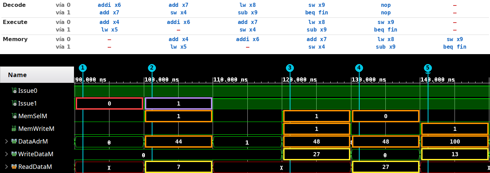
Figura 19. Programa 3, de 90 a 150 ns: el puerto de memoria en las dos vías.
Solo la segunda del par depende de lw x5, así que sale la primera sin detener el PC.
lw x5 usa el puerto desde la vía 1 (MemSelM = 1), y en Decode salen juntos add x7 y sw x4.
El sw de la vía 1 escribe 27 en la dirección 48.
lw x8, ahora en la vía 0, lee ese 27.
El último sw guarda 13 en la dirección 100.
6.4 Programa 4: saltos en las dos posiciones del par
Hay beq y jal en las dos posiciones, tomados y no tomados. Las instrucciones que suman algo a x9 no deben ejecutarse. Si alguna lo hiciera, el resultado no sería 0.
0 addi x1, x0, 5 # x1 = 5
4 addi x9, x0, 0 # x9 = 0
8 beq x1, x1, L1 # vía 0, se toma
12 addi x9, x9, 1 # su pareja: se anula
16 addi x9, x9, 1 # se anula
20 addi x9, x9, 1 # se anula
24 L1: sw x1, 40(x0) # Mem[40] = 5
28 beq x1, x0, L2 # vía 1, no se toma
32 lw x2, 40(x0) # x2 = 5, más antigua que el salto: sigue
36 beq x1, x1, L2 # vía 1, se toma
40 add x9, x9, x2 # se anula (y además depende del lw)
44 addi x9, x9, 1 # se anula
48 L2: beq x1, x0, L3 # no se toma; dos saltos en el par: sale solo
Código 17. Programa 4 (e2_p4_branches.s), primera parte: los beq.
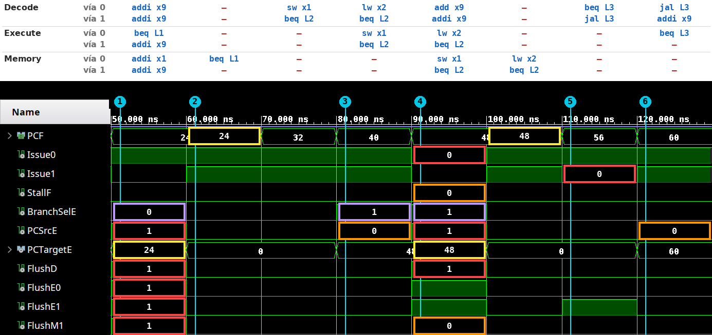
Figura 20. Programa 4, de 50 a 130 ns.
El beq de la vía 0 se toma. FlushD, FlushE0 y FlushE1 anulan lo que entró detrás, y FlushM1 anula a su pareja.
En Memory solo queda el beq, y PCF = 24.
beq x1, x0, L2 está en la vía 1 (BranchSelE = 1) y no se toma.
beq x1, x1, L2 se toma en la vía 1, pero FlushM1 = 0 porque el lw de la vía 0 es más antiguo. En Decode hay un Load-Use, pero manda el salto: StallF = 0 y el PC salta a 48.
El jal de la vía 0 salta a 60 y FlushM1 anula a su pareja.
El jal escribe x3 = 56.
El jal de la vía 1 salta a 72 sin anular a su pareja, que es más antigua.
Las dos vías escriben a la vez x4 y x5. Al final Mem[100] = 0, así que nada anulado se ejecutó.
6.5 Programa 5: dos escrituras en el Register File
0 addi x1, x0, 11 # x1 = 11
4 addi x2, x0, 22 # x2 = 22 se escriben en el mismo ciclo
8 addi x3, x0, 5 # x3 = 5
12 addi x3, x0, 9 # x3 = 9 las dos escriben x3: queda la vía 1
16 addi x0, x0, 7 # destino x0: se sigue leyendo 0
20 addi x4, x0, 4 # x4 = 4
24 sw x2, 40(x0) # Mem[40] = 22
28 add x5, x1, x3 # x5 = 20
32 lw x6, 40(x0) # x6 = 22 dato de memoria
36 add x7, x3, x4 # x7 = 13 dato de la ALU, mismo ciclo
... (add x8, add x9, add x10, add x11)
56 sw x10, 100(x0) # Mem[100] = 42
60 fin: beq x0, x0, fin
Código 19. Programa 5 (e2_p5_regfile.s), resumido.
En esta waveform agregamos los registros. Cambian a la mitad del ciclo porque el Register File escribe en el flanco de bajada.
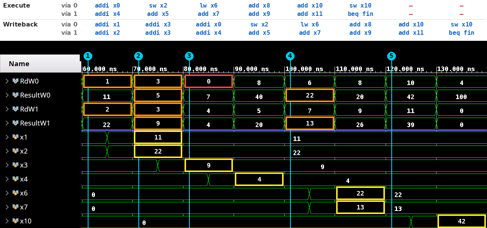
Figura 22. Programa 5, de 60 a 140 ns.
Las dos vías escriben a la vez x1 y x2.
Las dos vías escriben x3 y queda 9, el dato de la vía 1.
La escritura en x0 no cambia nada.
Una vía escribe un dato de memoria y la otra uno de la ALU.
x10 = 42 solo sale bien si todas las escrituras anteriores fueron correctas.
6.6 Programa 6: reagrupamiento
Casi cada instrucción depende de la anterior, así que la pendiente se reagrupa una y otra vez. Si alguna se perdiera o se repitiera, el resultado no sería 37.
Los dos addi x1 del par dependen entre sí: Issue1 = 0.
El segundo pasa a la vía 0 con addi x2 al lado, y ahora salen juntas. PCF avanzó solo 4.
Desde aquí hay emisiones parciales seguidas y PCF avanza de 4 en 4.
En Writeback x1 toma los valores del 1 al 7 en orden, sin saltarse ni repetir ninguno.
7. Optimización: predicción dinámica de saltos
7.1 Limitación que buscamos resolver
En el Dual-Issue un salto tomado anula todo lo que entró detrás. En el beq que cierra un bucle eso cuesta 2 ciclos y hasta cinco instrucciones en cada vuelta (Figura 24).
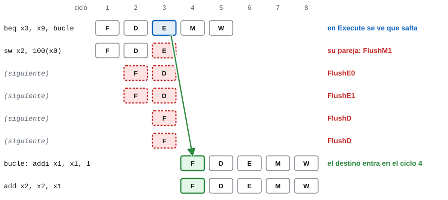
Figura 24. Salto que cierra un bucle en el Dual-Issue: el destino recién entra en el ciclo 4.
En el Dual-Issue esto pesa más que en el pipeline, porque en cada ciclo perdido podían haber salido dos instrucciones. En el programa del profesor, por ejemplo, el Dual-Issue pierde así 134 de sus 387 ciclos.
7.2 Idea
La idea es decidir ya en Fetch si el salto se toma y a dónde va. Si se acierta, el destino entra en el ciclo siguiente y no se pierde nada (Figura 25). Si se falla, se hace el mismo flush de antes.
Figura 25. El mismo salto con predicción: el destino entra en el ciclo 2.
En Fetch la instrucción todavía no se decodificó, así que hacen falta dos cosas.
Un branch target buffer (BTB), que es una tabla con la dirección y el destino de los saltos ya ejecutados. El destino de un beq o un jal siempre es PC + inmediato, así que el guardado siempre es correcto.
Un contador de 2 bits por salto, que sube cuando el salto se toma y baja cuando no (Figura 26). Con 10 u 11 se predice tomado. Desde 11 hacen falta dos fallos seguidos para cambiar la predicción, así que la salida de un bucle no la cambia.
Figura 26. Estados del contador de 2 bits.
7.3 Predictor
El módulo nuevo predictor.v tiene 16 entradas indexadas con PC[5:2]. Cada entrada guarda un bit de válido, el PC del salto, su destino y su contador. Como Fetch lee dos instrucciones, se consulta dos veces, con PCF y con PCF + 4.
wire hit0 = valid[i0] & (pc[i0] == PCF0); // i0 = PCF0[5:2]
assign PredF0 = hit0 & cnt[i0][1]; // se predice tomado
assign PredTargetF0 = target[i0]; // destino guardado
// igual para PCF1 = PCF + 4: PredF1 y PredTargetF1
Código 21. Consulta del predictor en predictor.v.
La tabla se actualiza cuando el salto llega a Execute. Si el salto ya estaba, su contador sube o baja. Si no, se guarda con el contador en 10 o en 01, según se haya tomado o no.
7.4 Cambios en Fetch
La Figura 27 muestra el Fetch nuevo, numerado en el orden en que se usa cada parte.
Figura 27. Fetch de la versión optimizada.
El predictor recibe PCF y PCF + 4 y entrega PredF0, PredF1 y sus destinos.
seqmux da el PC sin predicción: avanza 8 si salieron las dos instrucciones y 4 si no.
predmux salta al destino de InstrF0 si se predice tomada. Si no, salta al de InstrF1, pero solo con Issue1 = 1, porque si no InstrF1 no entra al registro F/D.
pcmux toma PCCorrectE cuando en Execute la predicción falló.
Si InstrF0 se predice tomada, InstrF1 es del camino que no se sigue y se cambia por una burbuja. Si solo se le impidiera salir, quedaría pendiente y se reagruparía con el par siguiente.
Cada posición del registro F/D guarda también la predicción, que viaja con su instrucción hasta Execute.
Código 23. Comparación de la predicción en Execute.
Con esto quedan los cuatro casos de la Tabla 10. En la Hazard Unit los flushes ahora dependen de MispredE en lugar de PCSrcE. Así FlushM1 anula la pareja de un salto de la vía 0 solo si la predicción falló.
Predicción
Resultado
MispredE
Qué pasa
No tomado
No tomado
0
Nada
No tomado
Tomado
1
Flush y el PC carga PCTargetE
Tomado
Tomado
0
Nada: no se pierde ningún ciclo
Tomado
No tomado
1
Flush y el PC carga BranchPCPlus4E
Tabla 10. Los cuatro casos de la predicción.
7.6 Forwarding del resultado de un jal
Las pruebas al azar (sección 8) encontraron un caso nuevo. Un jal escribe PC + 4 en rd, pero el forwarding desde Memory solo traía ALUResultM. Sin predicción no importaba, porque el flush retrasaba al destino hasta que el jal estaba en Writeback. Con la predicción, la instrucción que usa rd llega a Execute con el jal todavía en Memory (Figura 29).
Figura 29. Un jal predicho y una instrucción del destino que usa rd.
Lo corregimos con un mux por vía en Memory, que deja pasar PCPlus4M si la instrucción es un jal. Su salida, ResultM0 o ResultM1, reemplaza a ALUResultM en los muxes de forwarding. Un lw no necesita este camino, porque antes de usar su dato siempre hay un stall.
La Tabla 11 resume los cambios y la Figura 30 muestra el datapath completo.
Módulo
Estado
Cambio
predictor
Nuevo
Tabla de 16 entradas: dos consultas en Fetch y una actualización en Execute
datapath_dual
Modificado
Predictor y muxes del PC en Fetch, burbuja en lugar de InstrF1, bit de predicción en F/D y D/E, TakenE, MispredE y correctmux en Execute, resultmmux0/1 en Memory
hazardunit_dual
Modificado
Los flushes dependen de MispredE
issueunit y los demás
Sin cambios
Tabla 11. Módulos de la versión optimizada.
8. Pruebas de la optimización
Probamos la versión optimizada de tres formas.
Con los programas de las secciones 2 y 6 y riscvtest. Dan el mismo resultado y tardan lo mismo que en el Dual-Issue, porque en ellos cada salto se ejecuta una sola vez y nunca está en la tabla.
Con programas al azar (carpeta pruebas_aleatorias) que tienen bucles, saltos en las dos vías y dependencias con lw. Cada uno corre en A, B y C, y se comparan los registros, la memoria y las instrucciones retiradas. Así encontramos el caso del jal de la sección 7.6. Después de corregirlo, 10 000 programas dieron lo mismo en las tres.
Con dos programas con bucles, para ver la predicción en las waveforms (Tabla 12).
Prueba
Qué revisa
Resultado
ef_p1_bucle
Un bucle de 10 vueltas cerrado con un beq: cómo aprende el predictor, un acierto sin flush y el fallo de la última vuelta
Mem[100] = 55
ef_p2_vias
Dos bucles cerrados con un jal, uno en la vía 0 y otro en la vía 1. La instrucción que sigue a cada jal suma 1 a x9 y no debe ejecutarse nunca
Mem[100] = 18, x9 = 0
Tabla 12. Pruebas de la optimización (testbenches tb_ef_p1 y tb_ef_p2).
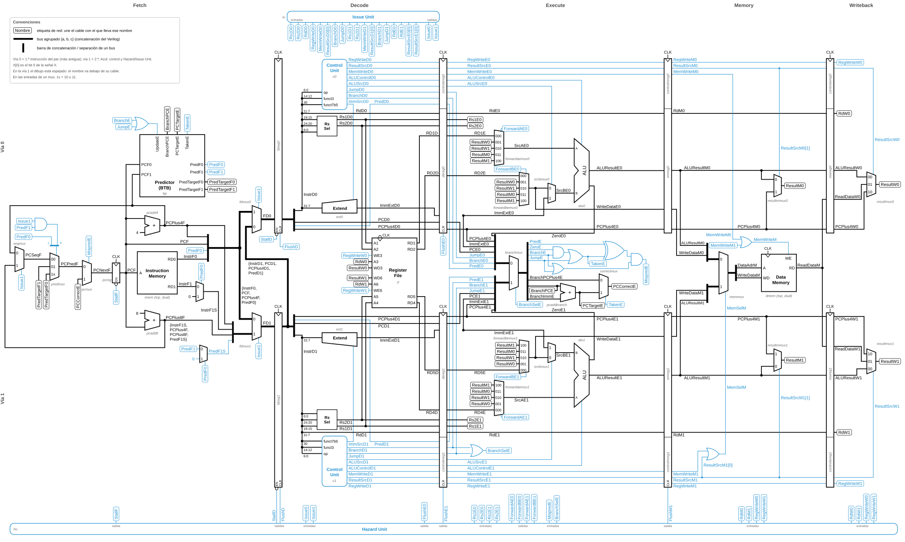
Figura 30. Datapath del Dual-Issue con predicción de saltos.
8.1 Prueba 1: el predictor aprende un bucle
0 addi x1, x0, 0 # i = 0
4 addi x2, x0, 0 # suma = 0
8 addi x9, x0, 1 # constante 1
12 bucle: addi x1, x1, 1 # i = i + 1
16 add x2, x2, x1 # suma = suma + i
20 slti x3, x1, 10 # x3 = 1 mientras i < 10
24 beq x3, x9, bucle # vuelve mientras i < 10
28 sw x2, 100(x0) # Mem[100] = 55
32 fin: beq x0, x0, fin
Código 25. Prueba 1 (ef_p1_bucle.s). El salto está en la dirección 24.
La Figura 31 muestra las dos primeras vueltas y la Figura 32 la última.
Figura 31. Prueba 1, de 60 a 130 ns: la primera vuelta se predice mal y la segunda ya bien.
En la primera vuelta el beq no está en la tabla y se toma (MispredE = 1), así que hay flush como en el Dual-Issue. Al resolverse, el salto se guarda en la tabla.
En la segunda vuelta el beq ya está en la tabla: se predice tomado en Fetch (PredF0 = 1) y el siguiente PC ya es el destino (PCNextF = 12).
Al lado del beq entra una burbuja en lugar del sw.
En Execute la predicción acierta (MispredE = 0) y no se pierde ningún ciclo.
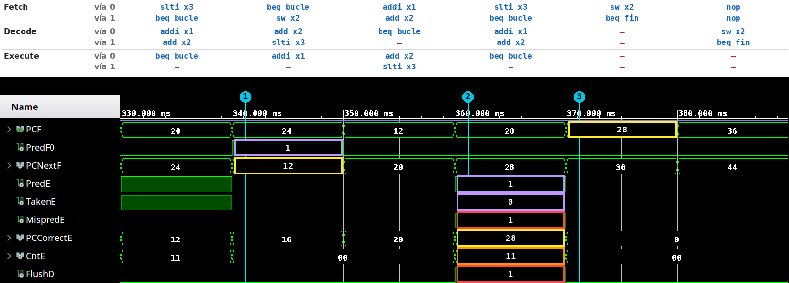
Figura 32. Prueba 1, de 330 a 390 ns: la última vuelta.
En la última vuelta el beq también se predice tomado.
Pero ya no se toma (TakenE = 0), así que MispredE = 1 y el PC vuelve a la instrucción que sigue al salto (PCCorrectE = 28). CntE = 11 es el contador antes de actualizarse; al final de ese ciclo baja a 10.
Fetch lee el sw y fin, y en Decode quedan las burbujas del flush.
El beq falla solo en la primera y en la última vuelta. Por eso la prueba tarda 40 ciclos, contra 53 en el Dual-Issue.
8.2 Prueba 2: un salto predicho en la vía 1
20 L1: addi x1, x1, 1
24 beq x1, x2, sale1
28 addi x5, x5, 2
32 jal x0, L1 # el jal queda en la via 0
36 addi x9, x9, 1 # no debe ejecutarse
40 sale1: addi x1, x0, 0
44 L2: beq x1, x2, sale2
48 addi x1, x1, 1
52 addi x7, x7, 3
56 jal x0, L2 # el jal queda en la via 1
60 addi x9, x9, 1 # no debe ejecutarse
Código 26. Los dos bucles de la prueba 2 (ef_p2_vias.s).
En el segundo bucle el jal queda en InstrF1, es decir, en la vía 1 (Figura 33).
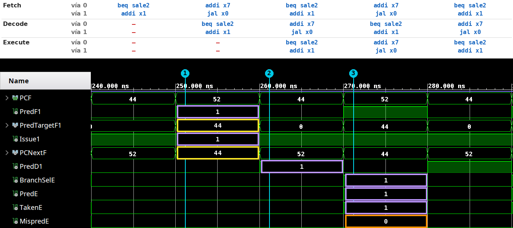
Figura 33. Prueba 2, de 240 a 290 ns: el jal de la dirección 56 se predice desde la vía 1.
El jal se predice desde la vía 1 (PredF1 = 1). Como salen las dos instrucciones, el siguiente PC es su destino.
El par addi x7 | jal llega a Decode con la predicción guardada.
En Execute la predicción acierta y no hay flush. El addi x7 de la vía 0 sigue normal.
Al final x9 = 0, así que ninguna instrucción que sigue a un jal se ejecutó.
9. Programas de comparación
Para comparar las tres arquitecturas usamos el programa del profesor y uno propio, que corren sin cambios en A, B y C con el mismo .mem. En esta sección revisamos que den el resultado correcto, y en la sección 10 comparamos su rendimiento.
9.1 Programa del profesor
El programa del profesor (profesor.s) tiene 90 instrucciones en cuatro etapas, y el enunciado da el estado que se espera al final de cada una. La etapa A prueba la doble emisión y las dependencias, la B los accesos a memoria, la C tres bucles de 12 vueltas y la D todo junto, con saltos que deben evitar dos sw. Como sus datos empiezan en la dirección 1536, usamos una memoria de datos de 512 palabras.
9.2 Comprobación de las etapas
Los testbenches tb_profesor (A), tb_profesor_dual (B) y tb_profesor_opt (C) comprueban cada etapa cuando su último sw llega a Writeback. En ese ciclo ya están escritos todos los registros y la memoria de la etapa, y el testbench los compara con el estado del enunciado. En la waveform, chk es la señal de comprobación y vale 1 en ese ciclo. etapa es la letra de la etapa, ok vale 1 si todo coincidió y pasadas cuenta las etapas correctas. Las cuatro etapas pasan en las tres arquitecturas (Tabla 13).
Los de A y x11 = 11, x12 = 16, x13 = 5, x14 = 12, x15 = 7, x16 = 7, x17 = 16, x18 = 23
Lo de A y M[x1+12] = 7, M[x1+16] = 16, M[x1+20] = 23
32 / 25 / 25
C
Los de B y x19 = 12, x20 = 12, x21 = 24, x22 = 18, x24 = 24, x26 = 6
Lo de B y M[x1+24] = 24, M[x1+28] = 18, M[x1+32] = 24
362 / 312 / 220
D
Los de C, salvo x19 = 6, x20 = 6, x26 = 4, y además x25 = 4, x27 = 1560, x28 = 74, x29 = 4, x30 = 23, x31 = 1
Lo de C y M[x1+36] = 74, M[x1+40] = 4, M[x1+44] = 0, M[x1+48] = 1, M[x1+52] = 1
459 / 387 / 292
Tabla 13. Estado al final de cada etapa, igual en el enunciado y en A, B y C. Los registros que no aparecen valen 0. El ciclo de D es el total de ciclos del programa.
Las Figuras 34 a 37 muestran las comprobaciones en la versión C. En morado están las señales del testbench, en amarillo los valores comprobados y en naranja la palabra que escribe el último sw de la etapa.
Figura 34. Comprobación de la etapa A (ciclo 12, a los 130 ns).
x9 = 7 muestra el orden de escrituras. add x9 y addi x9 escriben x9 en el mismo ciclo, y queda el dato de la vía 1, que es la instrucción más joven.
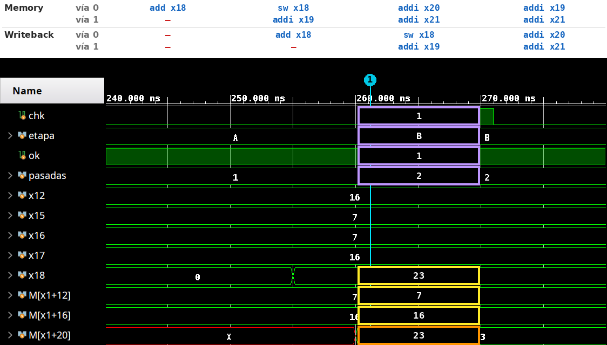
Figura 35. Comprobación de la etapa B (ciclo 25, a los 260 ns).
Ahora pasadas = 2. Están encerrados x18 y las tres palabras que guarda la etapa B.
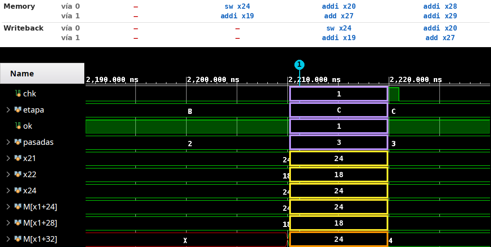
Figura 36. Comprobación de la etapa C (ciclo 220, a los 2210 ns).
Después de los tres bucles, x21, x22 y x24 tienen las sumas que da el enunciado.
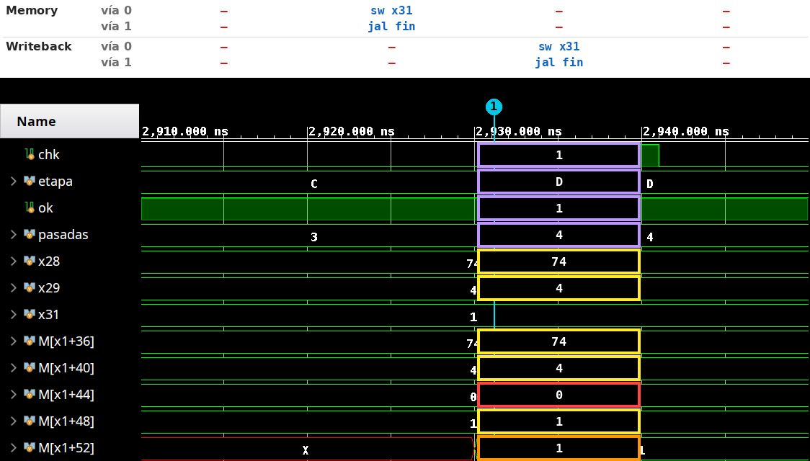
Figura 37. Comprobación de la etapa D (ciclo 292, a los 2930 ns): final del programa.
M[x1+44] (en rojo) sigue en 0, así que los dos sw que debían saltarse no se ejecutaron. En este mismo ciclo fin llega a Writeback.
9.3 Dos casos clave
El enunciado del profesor también pide al menos dos waveforms de casos importantes. Elegimos la etapa A, con doble emisión y dependencias, y la etapa B, con el puerto único de memoria y el Load-Use. Las dos son de la versión C, pero en estas etapas no hay saltos y B se comporta igual.
Código 27. Etapa A del programa del profesor. Una línea en blanco separa los grupos que salen juntos de Decode.
Figura 38. Etapa A, ciclos 4 a 8 (de 50 a 100 ns): doble emisión con dependencias.
Ciclo 5. add x5 y sub x6 están juntas en Execute y toman x3 y x4 de Memory, uno de cada vía (011 y 100).
Ciclo 6. add x9 y addi x9 escriben el mismo registro, pero esa WAW no impide que salgan juntas (Issue1 = 1).
Ciclo 8. add x10 necesita x9, que está en Memory en las dos vías, y toma el de la vía 1 (100), que es el más reciente. En Decode hay dos sw y sale solo el primero (Issue1 = 0).
En la etapa B casi todas las instrucciones usan memoria (Código 28), así que solo add x12 y lw x13 salen juntas.
56 lw x11, 0(x1)
60 add x12, x11, x6 # espera un ciclo por Load-Use
64 lw x13, 4(x1) # sale junto con el add
68 lw x14, 8(x1)
72 sub x15, x14, x13 # espera un ciclo por Load-Use
76 sw x15, 12(x1) # M[x1+12] = 7
80 lw x16, 12(x1) # lee lo que acaba de guardar el sw
84 sw x12, 16(x1) # M[x1+16] = 16
88 lw x17, 16(x1)
92 add x18, x16, x17 # espera un ciclo por Load-Use
96 sw x18, 20(x1) # M[x1+20] = 23
Código 28. Etapa B del programa del profesor.
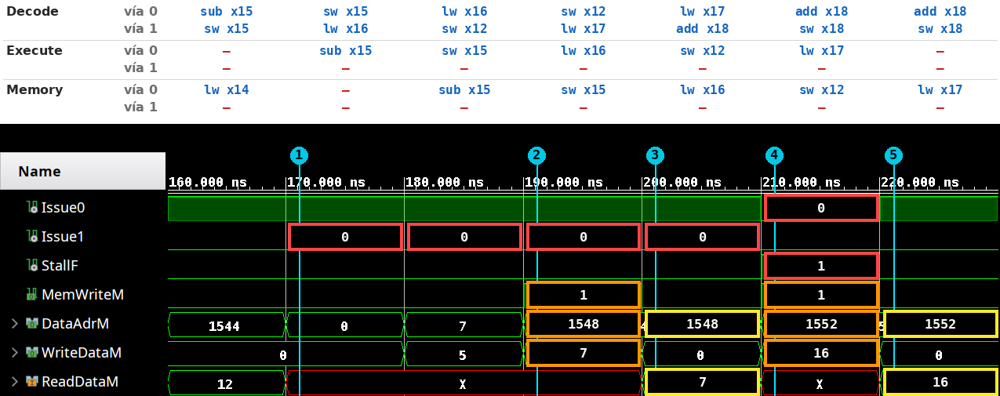
Figura 39. Etapa B, ciclos 15 a 21 (de 160 a 230 ns): puerto único de memoria y Load-Use.
Ciclo 16. sw x15 y lw x16 usan memoria y sale solo el sw. Lo mismo pasa en los tres ciclos siguientes; en el último, porque add x18 usa el dato de lw x17.
Ciclo 18. sw x15 escribe 7 en M[x1+12].
Ciclo 19. lw x16 lee esa dirección y obtiene el 7, porque también en el pipeline va detrás del sw.
Ciclo 20. add x18 depende de lw x17, que está en Execute. Es un Load-Use y no sale ninguna (Issue0 = 0).
Ciclo 21. lw x17 lee el 16, que add x18 recibe por forwarding en el ciclo siguiente.
9.4 Programa propio
El programa propio trabaja con un arreglo de 16 números (Código 29). El bucle gen lo llena con los números del 0 al 15 desordenados. El bucle rec lo recorre con lw, suma todos los números, cuenta los menores que 8 y suma los demás. Los tres resultados son iguales en A, B y C.
0 addi x1, x0, 0 # direccion del elemento i
4 addi x2, x0, 64 # direccion final (16 palabras)
8 addi x3, x0, 3 # v = 3
12 gen: addi x3, x3, 5 # v = v + 5
16 andi x4, x3, 15 # A[i] = v mod 16
20 sw x4, 0(x1) # guarda A[i]
24 addi x1, x1, 4 # siguiente elemento
28 beq x1, x2, sigue # termino de llenar
32 jal x0, gen # vuelve a gen
36 sigue: addi x1, x0, 0 # direccion del elemento i
40 addi x5, x0, 0 # suma total
44 addi x6, x0, 0 # cuantos son menores que 8
48 addi x7, x0, 0 # suma de los mayores o iguales a 8
52 rec: lw x8, 0(x1) # x8 = A[i]
56 addi x1, x1, 4 # siguiente elemento
60 add x5, x5, x8 # suma total
64 slti x9, x8, 8 # x9 = 1 si A[i] < 8
68 beq x9, x0, grande # A[i] >= 8
72 addi x6, x6, 1 # uno menor que 8 mas
76 jal x0, prox
80 grande: add x7, x7, x8 # suma de los mayores o iguales a 8
84 prox: beq x1, x2, listo # termino de recorrer
88 jal x0, rec # vuelve a rec
92 listo: sw x5, 100(x0) # Mem[100] = 120
96 sw x6, 104(x0) # Mem[104] = 8
100 sw x7, 108(x0) # Mem[108] = 92
104 fin: beq x0, x0, fin # fin del programa
Código 29. Programa propio (propio.s), con la dirección de cada instrucción.
Tiene pares independientes, dependencias con el lw y tres tipos de saltos: los jal que cierran los bucles, que siempre se toman; los beq de salida, que se toman una vez; y beq x9, x0, grande, que depende del dato. De sus 240 instrucciones, 86 son saltos.
10. Comparación de las tres arquitecturas
10.1 Cómo medimos
Usamos el criterio del enunciado del profesor en todos los programas. Todo programa termina en fin, un salto a sí mismo que no se cuenta. Los ciclos van desde el reset hasta que la última instrucción antes de fin está en Writeback. Las instrucciones retiradas son las que llegan a Writeback, sin burbujas ni instrucciones anuladas. IPC = instrucciones / ciclos, CPI = ciclos / instrucciones y speedup = ciclos de la arquitectura base / ciclos de la evaluada.
Lo miden tb_comparacion, tb_comparacion_dual y tb_comparacion_opt, que el script comparar.sh corre juntos. También cuentan stalls, flushes y la precisión del predictor. Para el speedup suponemos el mismo reloj; el tiempo real está en la sección 10.6.
10.2 Resultados
La Tabla 14 tiene los indicadores en el formato del enunciado, más una fila con el speedup frente al Dual-Issue. Las tres versiones retiran las mismas instrucciones; solo cambian los ciclos.
Indicador
Programa del profesor
Programa propio
Pipeline
Dual-Issue
Optimizado
Pipeline
Dual-Issue
Optimizado
Ciclos totales
459
387
292
340
289
204
Instrucciones retiradas
312
312
312
240
240
240
CPI
1.47
1.24
0.94
1.42
1.20
0.85
IPC
0.68
0.81
1.07
0.71
0.83
1.18
Speedup vs. pipeline
1.00
1.19
1.57
1.00
1.18
1.67
Speedup vs. Dual-Issue
-
1.00
1.33
-
1.00
1.42
Tabla 14. Indicadores de rendimiento. Pipeline es la arquitectura A, Dual-Issue la B y Optimizado la C.
La Figura 40 muestra de dónde sale la diferencia. El pipeline y el Dual-Issue pierden los mismos ciclos en flushes, porque toman los mismos saltos. La predicción recupera más de la mitad de esos ciclos.
Figura 40. Ciclos de los dos programas. En rojo, los ciclos perdidos en flushes por saltos (2 por cada flush).
10.3 Programas de prueba
La Tabla 15 tiene los programas de prueba, que dan el mismo resultado en A, B y C. El Dual-Issue gana más con instrucciones independientes (Dual 1 y 5) y nada cuando cada instrucción depende de la anterior (Pipeline 3). C solo mejora en las dos pruebas con bucles.
Programa
Instr.
Ciclos
IPC
Speedup
A
B
C
A
B
C
A a B
B a C
Pipeline 1: ISA
18
24
16
16
0.75
1.12
1.12
1.50
1.00
Pipeline 2: forwarding
8
12
11
11
0.67
0.73
0.73
1.09
1.00
Pipeline 3: stalling
7
13
13
13
0.54
0.54
0.54
1.00
1.00
Pipeline 4: flushing
8
16
14
14
0.50
0.57
0.57
1.14
1.00
Dual 1: ALU independientes
15
19
12
12
0.79
1.25
1.25
1.58
1.00
Dual 2: RAW y forwarding
13
17
12
12
0.76
1.08
1.08
1.42
1.00
Dual 3: Load-Use y memoria
13
18
14
14
0.72
0.93
0.93
1.29
1.00
Dual 4: branches
14
26
21
21
0.54
0.67
0.67
1.24
1.00
Dual 5: Register File
15
19
12
12
0.79
1.25
1.25
1.58
1.00
Dual 6: reagrupamiento
12
16
13
13
0.75
0.92
0.92
1.23
1.00
riscvtest
18
27
24
24
0.67
0.75
0.75
1.12
1.00
EF 1: bucle
44
66
53
40
0.67
0.83
1.10
1.25
1.32
EF 2: dos vías
40
62
48
38
0.65
0.83
1.05
1.29
1.26
Tabla 15. Ciclos, IPC y speedup de los programas de prueba en las tres arquitecturas.
10.4 Dual-Issue frente al pipeline
En el programa del profesor el Dual-Issue es 1.19 veces más rápido que el pipeline, lejos del 2 ideal. Para ver por qué, contamos qué pasa en Decode en cada ciclo de B (Tabla 16) y cuánto tarda cada etapa del programa (Tabla 17). Con eso se ven las cuatro causas que lo alejan de IPC = 2.
En Decode
Ciclos
Sale un par completo
140
Sale una sola instrucción
99
Stall por Load-Use
10
Flush por los 67 saltos tomados
134
Llenado y vaciado del pipeline
4
Total
387
Tabla 16. En qué se van los ciclos del Dual-Issue en el programa del profesor. Un par cuenta aunque después se anule.
Etapa
Instrucciones
Ciclos A
Ciclos B
Ciclos C
Speedup A a B
Speedup B a C
A
14
18
12
12
1.50
1.00
B
11
14
13
13
1.08
1.00
C
216
330
287
195
1.15
1.47
D
71
97
75
72
1.29
1.04
Total
312
459
387
292
1.19
1.33
Tabla 17. Ciclos de cada etapa del programa del profesor. La etapa A incluye los 4 ciclos en que se llena el pipeline.
Las dependencias entre instrucciones seguidas, que obligan a emisiones parciales. La etapa A tiene operaciones que se resuelven con forwarding desde las dos vías (Figura 38) y gana 1.50 veces. En la etapa C cada vuelta es una cadena de dependencias y gana solo 1.15.
El puerto único de memoria y el Load-Use, que dejan la etapa B casi igual que en el pipeline (Figura 39). Los stalls son casi los mismos en las tres versiones.
Los saltos tomados, que se llevan un tercio de los ciclos. Es lo que ataca la optimización, que en la etapa C es 1.47 veces más rápida que B.
En programas cortos, los 4 ciclos de llenado y vaciado. Dual 1 y 5 sacan todos sus pares completos y aun así quedan en IPC 1.25.
10.5 Efecto de la predicción
La Tabla 18 junta los stalls, los saltos, la precisión del predictor y cuántas instrucciones salieron en pares. C quita algo más de la mitad de los flushes en el programa del profesor y dos tercios en el propio. Además, sin esos flushes se arman más pares. Por eso en el programa del profesor C ahorra 95 ciclos frente a B, aunque los flushes evitados suman solo 70.
Programa
Arquitectura
Stalls
Saltos
Flushes
Precisión del predictor
Ciclos con dos en Writeback
Retiradas en pares
Profesor
A
9
89
67
-
-
-
B
10
89
67
-
73
47 %
C
10
89
32
64.0 %
98
63 %
Propio
A
0
86
48
-
-
-
B
16
86
48
-
67
56 %
C
9
86
16
81.4 %
81
68 %
Tabla 18. Métricas de los saltos y de la doble emisión. En A y B cada salto tomado es un flush; en C, cada predicción fallida. Retiradas en pares = 2 × ciclos con dos instrucciones en Writeback / instrucciones retiradas.
En el programa propio también cambian los stalls. En el pipeline addi x1 separa a lw x8 de add x5, pero en el Dual-Issue salen juntas y add x5 espera al lw en cada vuelta. En C los pares se arman distinto y en algunas vueltas ese stall desaparece.
La Tabla 19 separa los saltos del programa del profesor según cómo se comportan. Con ella se ve cuándo la predicción mejora, mantiene o empeora el desempeño.
Salto
Cómo se comporta
Ejecutado
Tomado
Flushes en B
Fallos en C
beq de C1, C2 y C3
Cierran bucles de 12 vueltas
36
33
33
6
beq de D1
Cierra un bucle de 6 vueltas
6
5
5
2
jal de C2 y C3
Saltan el otro lado del if/else
12
12
12
2
beq x23, x2, C2a
Alterna: sí, no, sí, no...
12
6
6
12
beq x25, x2, C3a
6 veces sí y después no
12
6
6
3
beq x25, x2, D2
Depende del dato
6
2
2
4
5 beq del final de D
Se ejecutan una sola vez
5
3
3
3
Total
89
67
67
32
Tabla 19. Saltos del programa del profesor. En B cada salto tomado es un flush; en C, cada fallo de predicción.
Mejora con los saltos de bucle y los jal. Fallan solo la primera vez, porque todavía no están en la tabla, y los beq también al salir del bucle. El beq de C3, que cambia de sentido una sola vez, falla 3 veces en lugar de 6.
Se mantiene igual con saltos que se ejecutan una sola vez y en código sin saltos, porque el salto nunca está en la tabla cuando se necesita.
Empeora con saltos que alternan o que dependen del dato. El beq de C2 se toma una vuelta sí y otra no, y su contador queda siempre del lado contrario: falla las 12 veces, contra 6 flushes sin predictor. El beq de D2 y beq x9, x0, grande del programa propio también fallan más veces de las que se toman.
Aun así C gana en los dos programas, porque los saltos de bucle se ejecutan muchas más veces que los demás.
10.6 Costo en hardware y tiempo real
Sintetizamos cada procesador en Vivado para la Basys 3, sin las memorias (Tabla 20). El periodo mínimo es 10 ns menos el slack del peor camino.
Arquitectura
LUTs
Flip-flops
Periodo mínimo
Frecuencia máxima
Tiempo de ejecución
Profesor
Propio
A Single-Issue
738
507
11.43 ns
87.5 MHz
5.25 µs
3.89 µs
B Dual-Issue
4197
1978
14.14 ns
70.7 MHz
5.47 µs
4.09 µs
C Dual-Issue con predicción
5170
3060
13.66 ns
73.2 MHz
3.99 µs
2.79 µs
Tabla 20. Recursos y frecuencia después de place and route en Vivado, y tiempo de ejecución con esa frecuencia.
El Dual-Issue usa casi seis veces las LUTs del pipeline, sobre todo por el Register File de cuatro lecturas y los muxes de forwarding. C agrega un 23 % de LUTs, casi todo por la tabla del predictor, que no está en el camino crítico. C tiene un periodo 0.48 ns menor que B por el place and route de Vivado, no por el diseño.
En tiempo real B es un poco más lento que A, con un speedup de 0.96 en el programa del profesor: gana 19 % en ciclos, pero pierde lo mismo en frecuencia. C es 1.32 veces más rápido que A y 1.37 veces más que B. Con el periodo de B, C sería 1.33 veces más rápido, igual que en ciclos.
10.7 Limitaciones de la optimización
Un contador de 2 bits no aprende un patrón como el de C2, porque no recuerda la historia del salto.
Con 16 entradas, dos saltos separados por un múltiplo de 64 bytes comparten entrada. Pasa con el jal de C2 y el beq de C3, pero como no se ejecutan a la vez no hay fallos extra.
No cambia las dependencias, el puerto de memoria ni el Load-Use, por eso C tampoco llega a IPC = 2.
11. Conclusiones
Las tres arquitecturas dan los mismos resultados en todos los programas, incluidos 10 000 programas al azar, y las cuatro etapas del programa del profesor pasan en A, B y C. En ese programa el Dual-Issue es 1.19 veces más rápido que el pipeline, y lo alejan de IPC = 2 las dependencias, el puerto único de memoria y los saltos tomados.
La predicción de saltos ataca los saltos tomados. En el programa del profesor C es 1.33 veces más rápido que B en ciclos y 1.37 veces en tiempo real. La mejora viene de los bucles; con saltos que alternan o dependen del dato puede ser peor que no predecir. Lo más difícil fue combinarla con el reagrupamiento y con el caso del jal, que encontramos con las pruebas al azar. Un predictor que recuerde la historia de cada salto mejoraría casos como el de C2.
Referencia
Harris, S. L. y Harris, D. M. (2021). Digital Design and Computer Architecture, RISC-V Edition. Morgan Kaufmann.